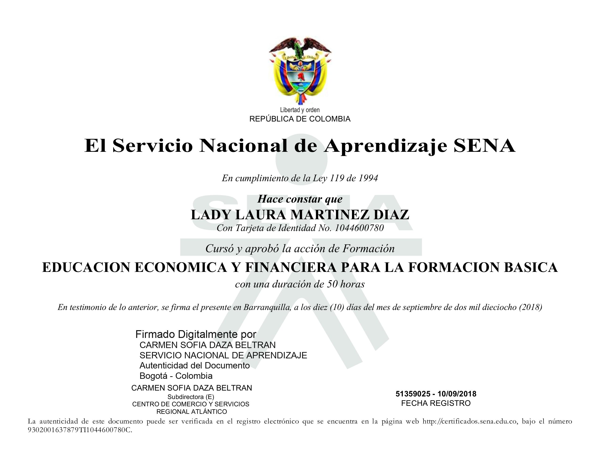

Lady Laura Martinez Diaz
19 años, Est. Ing de sistemas
Carrera 7G #42 -90 Barranquilla, 080006
+57 320 6155 580 ladylaumd08@gmail.com
ACERCA DE MI
Soy una estudiante de ingenieria de sistemas apasionada por aprender e innovar con temas nuevos cada dia. El orden y la perfección son mis mayores fortalezas a la hora de realizar una actividad que me sea asignada, acompañada de la persistencia y manteniendo un enfoque positivo para alcanzar mis logros. En mis relaciones personales soy un apersona colaborativa capaz de dar una mano a las personas cuando estas lo necesitan.
EXPERIENCIA LABORAL
Administracion-Atencion al cliente
Distribuidora Madipan del caribe
Barranquilla
He tenido el privilegio de desempeñar el rol de Administradora en una empresa panificadora local. Mi experiencia en este entorno dinámico me ha brindado una profunda comprensión de la operación y gestión de un negocio de panadería. Mi trabajo ha abarcado diversas áreas, desde la supervisión de procesos internos hasta la atención al cliente y el desarrollo del marketing de la empresa.
- Como Administradora, he sido responsable de supervisar las operaciones diarias, asegurando que cada aspecto de la panificadora funcione sin problemas, al tiempo que gestiono los recursos y el inventario de manera eficiente.
- La interacción con los clientes ha sido una parte fundamental de mi trabajo. He liderado iniciativas para mejorar la experiencia del cliente, implementando sistemas de retroalimentación y solucionando problemas de manera efectiva. Mi capacidad para mantener relaciones positivas con los clientes y atender sus necesidades ha contribuido al crecimiento constante de nuestra base de clientes leales.
HABILIDADES
- Atencion al cliente
- Organizacion
- Conocimientos en sistemas
- Matematicas
- Analisis de informacion
- Creatividad
- Gestion de tiempo
- Avanzado
- Experto
- Basico
- Competente
- Competente
- Intermedio
- Avanzado
CERTIFICADOS Y TITULOS
.jpg)